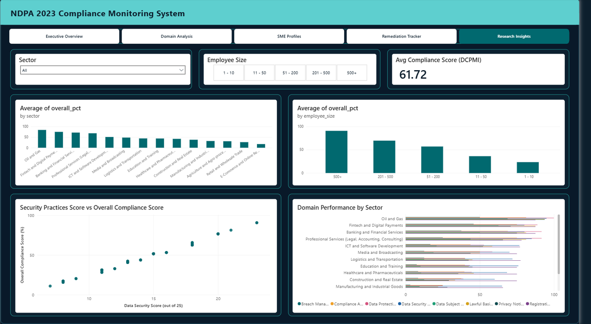
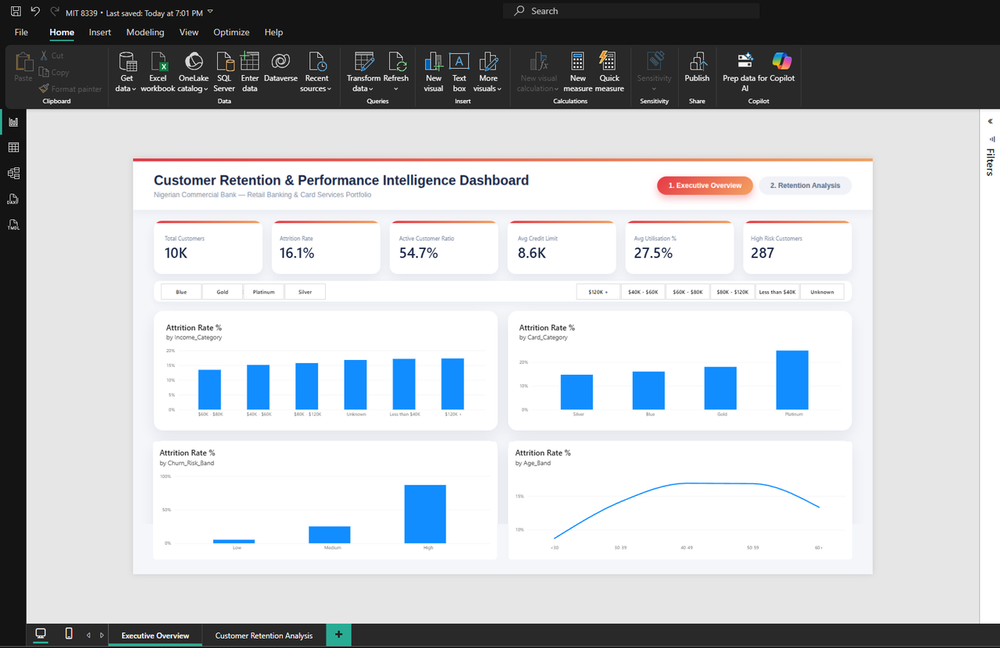
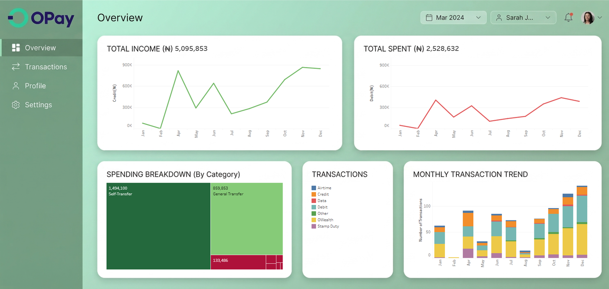
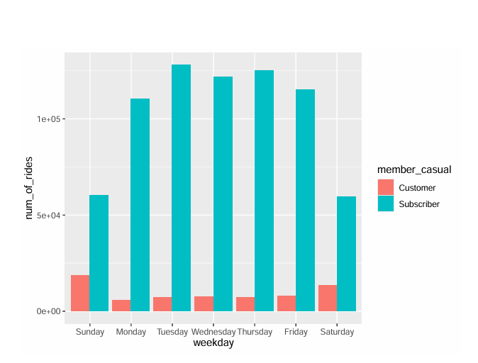
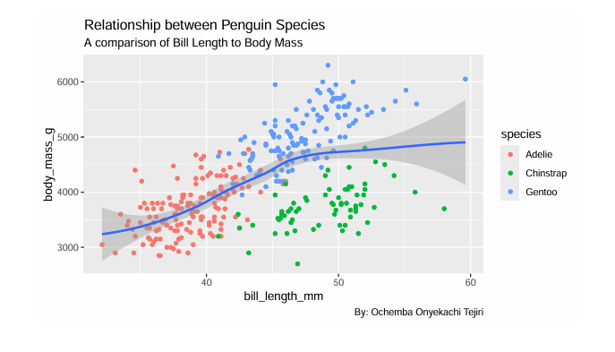

Data & Automation
Questions in.
Clarity out.
I clean, connect and explain data so people can see what is happening, then decide what to do next.
Data toolkit
The stack behind the answers.
The analysis, automation and build tools used across the projects below.
Analysis & automation
- SQL
 Tableau
Tableau Power BI
Power BI Spreadsheets
Spreadsheets n8n
n8n- R beginner
 Python beginner
Python beginner
Build & versioning
 Git
Git GitHub
GitHub Codex
Codex Claude Code
Claude Code- AI tools


01 · AUTOMATION + POWER BI
NDPA Compliance Readiness Assessment
A 41-item assessment, 17-node n8n workflow, MySQL model and five-page dashboard.
Open full case study ↗
02 · SQL + POWER BI
Customer Retention & Risk Intelligence
10,127 records turned into clear churn comparisons and practical segments.
Open full case study ↗
03 · TABLEAU
End-to-End Financial Analysis
OPay exports cleaned and shaped into an interactive view of income and spending.
Open full case study ↗
04 · R + GGPLOT2
Cyclistic Bike Share Analysis
A rider behaviour comparison translated into five testable marketing ideas.
Open full case study ↗
05 · R + EXPLORATION
Penguin Morphology
Species patterns explored through bill length and body mass.
Open full case study ↗